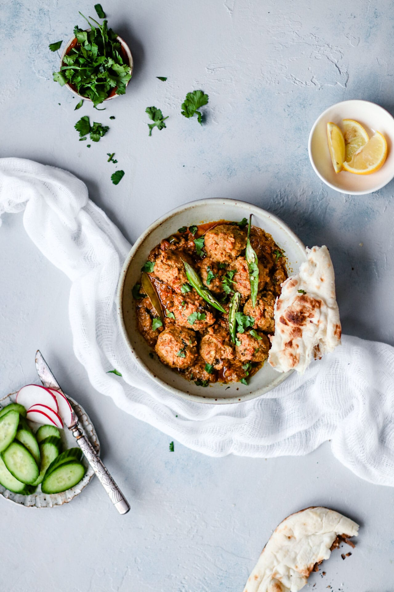

Mutton Kofta

A delicious version of handmade meat balls from the subcontinent.
Mutton Koftay is a dish loved by the people all over the subcontinent, rather be Pakistanis, Indians and
Bangladeshis,
etc.
It is handmade from ground mutton which is shaped into a ball.
Ingredients
-
1500gm Ground Mutton (Store bought minced)
-
Red Pepper Flakes
-
Fresh green chili
-
Yogurt
Instructions
-
Marinate the grounded Mutton in spices and the chilis.
This infuses the Mutton with noticeable flavor.
-
Take the Mutton out of the fridge before you start making the Koftay.
Allowing the Mutton to come closer to room temperature helps it cook more evenly and stay tender.
-
Using a bit of oil to grease your hands, form into meatballs about 1 ½ inch in diameter.
-
Heat a large, heavy bottomed pan over high heat. Add the oil and whole spices, and allow them to sizzle for
a few seconds.
Add green chili pepper, followed by the yogurt, spices and salt.
-
Raise the heat to medium, add the Koftay (meatballs) into the pan, cover and allow it to cook for 10
minutes.
Cover and allow it to simmer for another 35 minutes, stirring once in between, until cooked through.
-
Sauté to evaporate water to make the kofte to desired consistency. Taste and add salt, if needed. Sprinkle
cilantro. Serve hot.
The Koftay are ready to be eaten, with boiled rice or roti (flat bread) thats upto you.